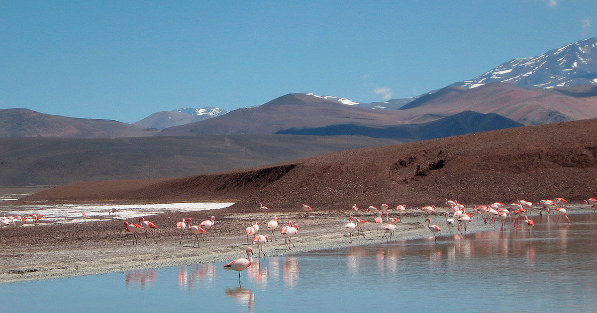
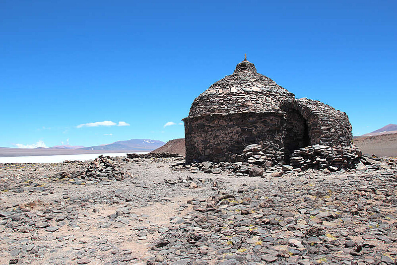
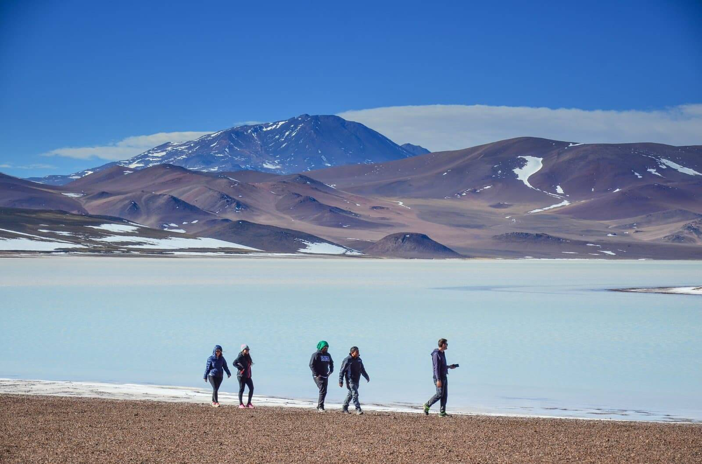

Descubre un paraíso oculto en el corazón de La Rioja, Argentina: la mágica Laguna Brava. Esta impresionante laguna de origen volcánico se encuentra en la cordillera de los Andes a más de 4,000 metros sobre el nivel del mar, rodeada de majestuosas montañas y paisajes deslumbrantes. Aquí, te invitamos a conocer todos los encantos que ofrece este destino único en el mundo.

Laguna Brava, cuyo nombre proviene del tono azul intenso de sus aguas, es un lugar de gran significado cultural y espiritual para las comunidades indígenas que han habitado estas tierras durante siglos. Para ellos, esta laguna es considerada sagrada y está envuelta en mitos y leyendas que hablan sobre su origen y el respeto que merece como un lugar protegido por los dioses.
El acceso a Laguna Brava puede ser un viaje desafiante, pero sin duda vale la pena. El punto de partida común es desde la ciudad de La Rioja, donde se puede alquilar un vehículo o contratar tours que ofrecen visitas guiadas. Desde allí, la ruta conduce a través de escenarios espectaculares de montaña, ríos y valles, proporcionando una experiencia de conducción inolvidable.

Una vez que llegues a la laguna, te encontrarás con un escenario surrealista. El intenso color azul de sus aguas contrasta con los blancos salares que la rodean, creando un paisaje de belleza deslumbrante. Al estar a tanta altura, el aire es puro y cristalino, lo que agrega un encanto especial a este lugar.
Se recomienda realizar caminatas suaves alrededor de la laguna para disfrutar plenamente del paisaje y evitar la altitud. También puedes hacer picnics, observar la fauna o simplemente meditar y conectarte con la naturaleza en este entorno único y espiritual.